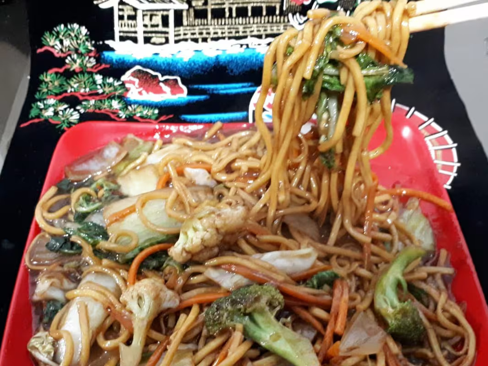

Yakisoba vegetariano ( P )
O Yakisoba Vegetariano (P) é uma deliciosa reinterpretação dos tradicionais Yakisobas. Este prato é composto por macarrão oriental meticulosamente cozido e frito, apresentando uma textura irresistível. Ele é enriquecido com um mix de legumes frescos, que incluem acelga, brócolis, couve-flor, repolho, cenoura e cebola, o que confere ao prato uma explosão de cores e sabores. Acrescentamos a essência da casa: um molho especial feito com legumes frescos e shoyu. Para finalizar, regamos com óleo de gergelim torrado, e coroamos com um mix de gergelim em grãos. Este prato é uma verdadeira celebração de sabores e texturas!
Valor R$45,42
